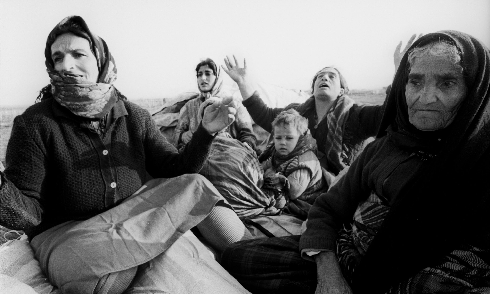

The Khojaly massacre was the mass killing of Azerbaijani civilians by Armenian forces and the 366th CIS regiment in the town of Khojaly on 26 February 1992. The event became the largest single massacre throughout the entire Nagorno-Karabakh conflict. Khojaly was an Azerbaijani-populated town of some 6,300 people in the Nagorno-Karabakh Autonomous Oblast of Azerbaijan SSR, also housing the region's only airport in 1992. The town was subject to daily shelling and total blockade by Armenian forces during the First Nagorno-Karabakh War. Without supply of electricity, gas, or water, it was defended by the local forces consisting of about 160 lightly armed men. The Armenian forces, along with some troops of the 366th CIS regiment, launched an offensive in early 1992, forcing almost the entire Azerbaijani population of the enclave to flee, and committing "unconscionable acts of violence against civilians" as they fled. On the night of 26 February 1992, the Armenian forces seized the town, taking prisoner or killing the civilians remaining in it. At the same time, several large groups of Azerbaijani civilians, along with some self-defense forces in some of them, were trying to escape the town and move towards the Azerbaijani-controlled territories. However, Armenian forces fired upon the fleeing Azerbaijani refugees, resulting in hundreds of deaths. The massacre was one of the turning points during the First Nagorno-Karabakh War. The death toll given by the Azerbaijani authorities is 613 civilians, including 106 women and 63 children. According to Human Rights Watch, at least 200 Azerbaijanis were killed during the massacre, though as many as 500–1,000 may have died. In the Nagorno-Karabakh conflict, both Armenians and Azerbaijanis became victims of pogroms and ethnic cleansing, which resulted in numerous casualties and displacement of large groups of people. By 1992, the conflict had escalated into a full-scale war. In February 1992 the capital of Nagorno-Karabakh Autonomous Oblast, Stepanakert, was under a blockade by Azerbaijani forces. In 1988 the town had 2,135 inhabitants. Due to the First Nagorno-Karabakh War, population exchanges occurred between Armenia and Azerbaijan, and Meskhetian Turk refugees leaving Central Asia subsequently settled in Khojaly. According to Thomas de Waal, Khojaly had been the focus of a large resettlement program by the Azerbaijan government in the late 1980s and early 1990s. This coincided with the First Nagorno-Karabakh War and increased the population to 6200 by 1991. Khojaly was on the road from Shusha and Stepanakert to Aghdam and had the region's only airport. The airport was of vital importance for the survival of the population in Karabakh, which had no land connection with Armenia and was under a total blockade by Azerbaijan. According to Human Rights Watch, Khojaly was used by Azerbaijani forces as a base for shelling Stepanakert. In October 1991, the Nagorno-Karabakh forces cut the road connecting Khojaly and Aghdam, so that the only way to reach Khojaly was by helicopter. According to the Memorial civil rights society, from autumn 1991 Khojaly was practically blockaded by Armenian armed forces, and after the withdrawal of the Soviet Internal Troops from Karabakh the blockade became total. Some inhabitants left the blockaded town, but the civilian population was not fully evacuated, despite insistent demands of the head of executive power of Khojaly, Elman Mammadov. Khojaly was defended by local OMON forces under the command of Alif Hajiyev, which numbered about 160 or so lightly armed men. Khojaly was shelled by Armenian forces almost daily in the winter of 1991–1992, and people grew accustomed to spending nights in basements, surviving the totally blockade, and the lack of electricity, gas and water.